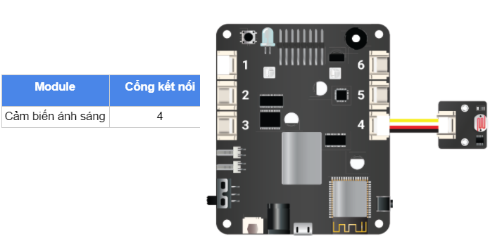

7. Bài học 6: Đèn LED RGB cảm ứng
Mục tiêu
Vận dụng kiến thức về tín hiệu Analog Input đã học để làm việc với cảm biến ánh sáng và điều khiển đèn LED đa màu RGB được tích hợp sẵn trên xController.
Tìm hiểu cách sử dụng cửa sổ Serial Monitor để xem và theo dõi kết quả đọc được từ cảm biến, từ đó có thể viết đúng logic hoạt động của chương trình.
Viết chương trình điều chỉnh độ sáng của đèn LED RGB một cách tự động dựa vào ánh sáng môi trường.
Kiến thức mới
Cảm biến ánh sáng
Cảm biến ánh sáng có nhiều loại, trong đó loại dùng quang trở là phổ biến nhất. Quang trở là một loại điện trở mà giá trị của nó thay đổi theo cường độ ánh sáng nó thu được. Nếu đặt ở môi trường có ít ánh sáng, có bóng râm hoặc bóng tối thì điện trở của quang trở sẽ tăng cao. Ngược lại, nếu đặt ở ngoài nắng, hoặc nơi có ánh sáng thì điện trở sẽ giảm.
{kind=link}
Ta có thể sử dụng cảm biến ánh sáng trong rất nhiều ứng dụng thực tế, ví dụ như bật tắt đèn tự động mỗi khi trời tối.
LED đa màu RGB
xController được tích hợp sẵn 2 đèn LED đa màu RGB trên board. Đèn LED RGB là đèn LED đặc biệt, có thể phát sáng với nhiều màu khác nhau (lên đến 16 triệu màu). Màu của đèn LED được tổng hợp từ 3 đèn màu đỏ (Red), xanh lục (Green), xanh lam (Blue) bên trong.
Các LED màu này có độ sáng từ 0 ~ 255. Để thay đổi màu đèn LED RGB, chúng ta sẽ thay đổi độ sáng của 3 LED màu này.
{kind=link}
Cửa sổ Serial Monitor
Cửa sổ Serial Monitor (gọi tắt là cửa sổ Serial) là một công cụ rất hữu ích để quan sát và theo dõi những thông tin trong một chương trình, như in kết quả đọc được từ cảm biến, giúp chỉnh sửa lỗi chương trình một cách dễ dàng.
Bạn có thể mở Serial Monitor bằng cách click vào Tools -> Serial Monitor.
{kind=link}
Lưu ý: xController có 16 kênh PWM độc lập (đánh số từ 0-15). Mỗi kênh này có thể cấu hình để sử dụng với tần số và Duty Cycle khác nhau.
Thiết bị cần sử dụng

Kết nối phần cứng
{kind=link}
Viết chương trình
Mở phần mềm Arduino IDE.
Để làm việc với đèn LED RGB tích hợp trên xController, bạn cài đặt thư viện của xController ở link này: https://github.com/AITT-VN/xcontroller_arduino_lib/archive/refs/heads/main.zip hoặc vào link Github để tải về tại https://github.com/AITT-VN/xcontroller_arduino_lib
Sau khi tải xong, bạn vào menu Sketch > Include library > Add .ZIP library, chọn file zip thư viện vừa tải để thêm vào Arduino IDE.
{kind=link}
Copy đoạn code sau, click vào nút Verify để kiểm tra lỗi chương trình. Sau khi biên dịch không báo lỗi, bạn có thể nạp đoạn code vào board.
#include <xcontroller.h>
XController xcon;
int lightSensorPin = A4_1; // cảm biến ánh sáng nối với cổng 4
int sensorValue= 0; // giá trị đọc được từ cảm biến
int outputValue= 0; // giá trị xuất ra cho LED RGB
void setup() {
Serial.begin(9600);
}
void loop() {
// đọc giá trị cảm biến ánh sáng (0-4095)
sensorValue = analogRead(lightSensorPin);
// in ra cửa sổ Serial kết quả đọc được
Serial.println(sensorValue);
// chuyển kết quả đọc được sang dải giá trị 0-255
outputValue = map(sensorValue, 0, 4095, 0, 255);
// in ra kết quả chuyển đổi
Serial.println(outputValue);
// thay đổi màu sắc của LED RGB, chỉ thay đổi giá trị màu đỏ
xcon.showLED(0, outputValue, 0, 0);
delay(100);
}
Sau khi nạp chương trình, Bạn có thể xem giá trị của cảm biến ánh sáng và kết quả tính toán độ sáng của đèn LED RGB trong cửa sổ Serial Monitor.
Giải thích chương trình
#include <xcontroller.h>
Để sử dụng thư viện của xController, bạn cần cài đặt như hướng dẫn ở trên. Trong chương trình, bạn cần khai báo thư viện (có tên <xcontroller.h>) bằng câu lệnh #include.
XController xcon;
Sau khi khai báo thư viện của xController, chúng ta khai báo một đối tượng là XController. Đối tượng này có các hàm để chúng ta làm việc với các chức năng tích hợp trên xController như đèn LED RGB, loa hay cảm biến gia tốc,…
Serial.begin(9600);
Khởi tạo giao tiếp Serial với tốc độ (baud rate) là 9600. Để thông tin hiển thị đúng trong cửa sổ Serial, bạn phải chọn tốc độ truyền nhận (ở góc dưới bên phải của giao diện màn hình Serial) đúng với giá trị dùng để khởi tạo trong chương trình.
Serial.println(sensorValue);
{kind=link}
In ra cửa sổ Serial giá trị đọc được từ cảm biến và ngắt xuống dòng. Một câu lệnh tương tự cũng in ra cửa sổ Serial nhưng không ngắt xuống dòng là Serial.print().
outputValue = map(sensorValue, 0, 4095, 0, 255);
Như ta đã biết, cảm biến xuất ra tín hiệu Analog có giá trị từ 0 ~ 4095, trong khi độ sáng của 3 đèn LED trong đèn LED RGB tích hợp nhận giá trị từ 0 ~ 255. Vậy nên, ta cần quy đổi hai thang đo này thành một:
Khi giá trị cảm biến là 0 thì độ sáng của LED đỏ trong LED RGB là 0.
Khi giá trị cảm biến là 4095 thì độ sáng LED đỏ trong LED RGB là 255.
Để chuyển đổi tự động, chúng ta sử dụng hàm map() cho phép chuyển đổi giá trị trong 1 dải giá trị này sang 1 dải giá trị khác.
Cú pháp của câu lệnh map như sau:
map(value, fromLow, fromHigh, toLow, toHigh)
Các tham số:
value: Số cần chuyển đổi.
fromLow: Giới hạn dưới của dải giá trị hiện tại.
fromHigh: Giới hạn trên của dải giá trị hiện tại.
toLow: Giới hạn dưới của dải giá trị mới cần chuyển đổi.
toHigh: Giới hạn trên của dải giá trị mới cần chuyển đổi.
xcon.showLED(0, outputValue, 0, 0);
Để thay đổi màu và độ sáng của đèn LED RGB trên xController, chúng ta sử dụng hàm showLED(). Hàm này có cú pháp như sau:
showLED(whichLED, redValue, greenValue, blueValue);
Các tham số bao gồm:
whichLED: LED RGB cần thay đổi màu sắc, nhận 1 trong các giá trị là 0 (cả 2 LED), 1 (LED trái), 2 (LED phải). Trong chương trình trên, chúng ta dùng giá trị 0 để đổi màu cả 2 LED trái phải trên xController.
redValue: Độ sáng của LED đỏ.
greenValue: Độ sáng của LED xanh lục.
blueValue: Độ sáng của LED xanh lam.
Để thay đổi độ sáng của đèn LED RGB, chúng ta chỉ cần thay đổi độ sáng của LED đỏ và tắt các LED xanh lục, xanh lam.
Sau khi nạp chương trình, bạn thử lấy tay che cảm biến ánh sáng và quan sát sự thay đổi độ sáng của cả 2 đèn LED RGB trên xController.